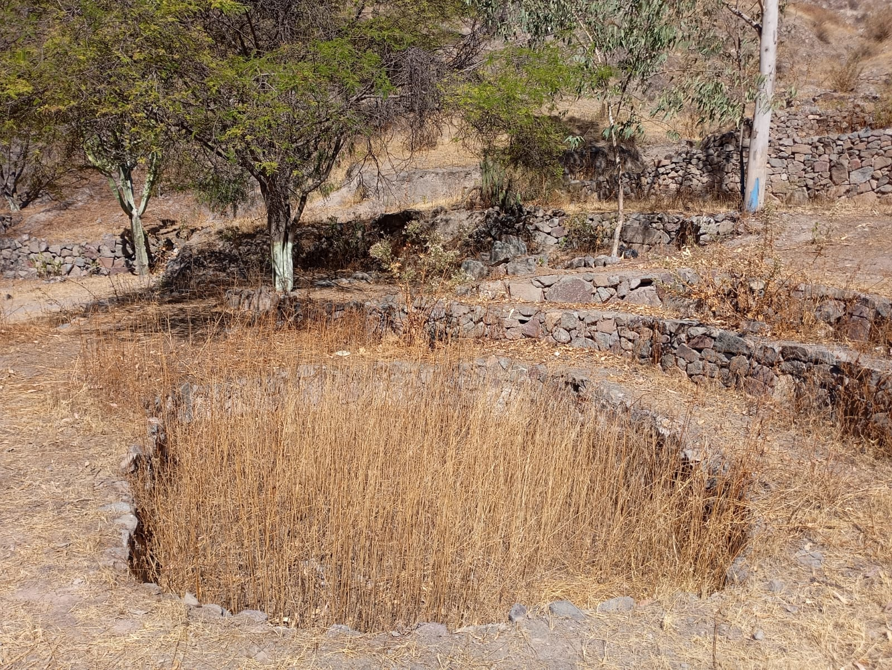
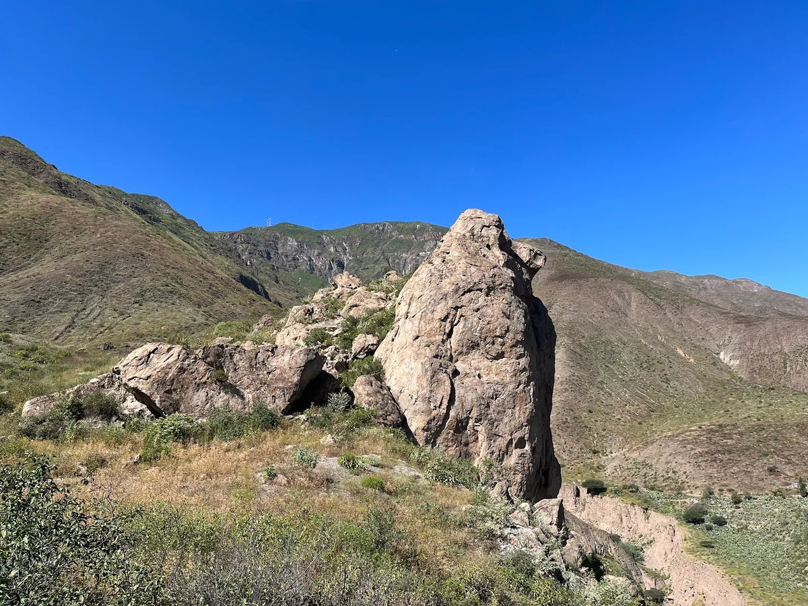

01
Fuentes
Documentos, registros, investigaciones, fotografías y testimonios que permiten aproximarnos al pasado.
EVIDENCIAExplora la historia de San Bartolomé a través de su territorio, patrimonio, tradiciones y memoria colectiva.
El distrito de San Bartolomé no nació en 1953. Lo que se creó en 1953 fue el distrito político-administrativo. El pueblo de San Bartolomé existía desde mucho antes. Los antecedentes históricos disponibles indican que en el censo de 1876 San Bartolomé ya aparecía como un pueblo anexo del distrito de Matucana. Posteriormente, en el censo de 1940, aparecía como anexo del distrito de Surco. Esto demuestra que la localidad tenía existencia como población mucho antes de obtener la categoría de distrito.
Una fuente local sostiene que antiguamente la zona habría recibido el nombre de "Sequiarcancha" y que sus primeros pobladores se asentaron en las partes altas, cerros y laderas. La misma fuente relaciona el territorio con la antigua agrupación de comunidades denominada Huaranca Checa. Sin embargo, esta información procede de una recopilación secundaria y no encontré, en esta búsqueda, un documento oficial primario que permita afirmar con absoluta seguridad que "Sequiarcancha" fue el nombre original de todo el actual pueblo de San Bartolomé
🏺 Pasado antiguo: Tiene antecedentes de población anteriores a la creación del distrito.
⛪ Religión: La iglesia y las fiestas de San Bartolomé son parte importante de sus tradiciones.
🚂 Ferrocarril: La llegada del Ferrocarril Central impulsó el comercio y la comunicación.
🌽 Agricultura: La agricultura ha sido una actividad tradicional de sus habitantes.
🗿 Chucuncuya: Representa parte del patrimonio arqueológico e histórico de la zona.
🌳 Bosque de Zárate: Es un espacio natural importante para la identidad del distrito.
🎉 Costumbres: Las fiestas, comidas y tradiciones se han transmitido entre generaciones.
🏘️ Comunidad: La memoria y las historias de los pobladores ayudan a mantener viva la identidad de San Bartolomé.
Turis-IA propone observar el pasado desde diferentes tipos de evidencia.
Documentos, registros, investigaciones, fotografías y testimonios que permiten aproximarnos al pasado.
EVIDENCIAEl paisaje también conserva huellas de las relaciones históricas entre las comunidades y su entorno.
ESPACIOLos relatos de los habitantes permiten conocer experiencias y significados transmitidos entre generaciones.
TESTIMONIORelacionamos las evidencias para construir explicaciones históricas responsables.
ANÁLISISUn territorio conserva diferentes tipos de patrimonio. Cada uno puede ayudarnos a interpretar una parte de su historia.

El patrimonio arqueológico permite acercarnos a las sociedades que ocuparon el territorio antes del presente.
Explorar patrimonioNegritos, Curcuchas, Mariquillas y otras expresiones culturales forman parte de la memoria viva.
Ver tradicionesMontañas, quebradas, caminos y espacios naturales forman parte del territorio donde se desarrolla la vida local.
Descubrir lugaresNo toda la historia de una comunidad está escrita. Muchas experiencias sobreviven a través de la memoria de sus habitantes.
Recuperar estas voces permite conocer cómo las personas interpretan su propio pasado, aunque estos testimonios deben contrastarse con otras fuentes cuando se realiza una investigación histórica.
Conocer las fuentesLa memoria de una comunidad también es una forma de patrimonio.— Principio de memoria local
Una interpretación histórica responsable no consiste en inventar explicaciones. Consiste en relacionar evidencias y reconocer sus límites.
¿Qué información tenemos?
¿En qué momento ocurrió?
¿Qué procesos se conectan?
¿Qué podemos explicar?
Para construir una interpretación histórica responsable es importante identificar de dónde proviene la información.
Información proveniente de municipalidades, ministerios, instituciones culturales y organismos públicos.
DOCUMENTALLibros, artículos, investigaciones académicas y trabajos especializados sobre Huarochirí y sus comunidades.
ACADÉMICAImágenes históricas y actuales que permiten comparar transformaciones del territorio.
VISUALRelatos de habitantes y personas que conservan recuerdos sobre la historia local.
ORALLa historia de San Bartolomé no está solamente en los libros. También aparece en sus leyes, documentos, lugares, testimonios y en las huellas que todavía permanecen en el territorio.
Buscamos documentos, registros y evidencias relacionadas con San Bartolomé.
Observamos qué dicen las fuentes y qué información aportan sobre el pasado del distrito.
Relacionamos la información con el territorio, la memoria y la identidad de San Bartolomé.
9 de noviembre de 1953
Esta ley estableció la creación política del distrito de San Bartolomé, en la provincia de Huarochirí.
La creación distrital representa un momento clave porque San Bartolomé pasó a tener reconocimiento político y administrativo propio.
Vicenta Bellido Bravo · 1981
El inventario turístico de MINCETUR registra como fuente bibliográfica el Ensayo monográfico del distrito de San Bartolomé, provincia de Huarochirí, departamento de Lima.
La existencia de una monografía dedicada al distrito demuestra que la historia local también ha sido investigada y registrada desde la propia comunidad.
Década de 1870
La llegada del Ferrocarril Central convirtió a San Bartolomé en un punto relacionado con uno de los grandes procesos de infraestructura del Perú del siglo XIX.
El ferrocarril no fue solamente una vía de transporte: también conectó el territorio con procesos económicos, sociales y sanitarios de importancia nacional.
San Bartolomé · siglo XIX
Investigaciones científicas registran la presencia de la enfermedad de Carrión en zonas relacionadas con la construcción del ferrocarril durante el siglo XIX.
La historia del distrito también puede estudiarse desde la ciencia, mostrando cómo las condiciones del territorio influyeron en la vida de sus pobladores.
Paisaje y patrimonio local
Lugares como el Mirador Cerrito de La Pascua forman parte del inventario turístico de San Bartolomé y permiten relacionar el paisaje actual con la historia local.
El territorio funciona como una fuente histórica: sus caminos, paisajes y lugares conservan huellas que ayudan a comprender cómo se desarrolló la comunidad.
Memoria e identidad
Las historias transmitidas entre generaciones permiten conservar conocimientos sobre lugares, costumbres, personajes y experiencias de la comunidad.
La memoria de los pobladores complementa los documentos escritos y ayuda a comprender cómo la comunidad recuerda y valora su propia historia.
Una fuente nos dice qué ocurrió. La interpretación nos ayuda a comprender por qué importa.
TurisIA · Historia de San BartoloméSan Bartolomé no es solamente un distrito delimitado en un mapa. Es un territorio construido durante generaciones por sus comunidades, sus actividades, sus caminos, sus paisajes y la relación permanente entre las personas y la naturaleza.

Antes de convertirse oficialmente en distrito, San Bartolomé ya formaba parte de un espacio andino habitado y utilizado por distintas poblaciones.
Sus montañas, quebradas, tierras agrícolas, fuentes de agua y caminos fueron utilizados para desarrollar actividades agrícolas, ganaderas, comerciales y culturales.
Por eso, el paisaje actual conserva huellas de las relaciones históricas entre las comunidades y su entorno.
Las personas de la comunidad de San Bartolomé conviven con la naturaleza mediante la agricultura, la ganadería y el aprovechamiento del agua. Además, valoran y protegen espacios naturales como el Bosque de Zárate, aunque también enfrentan problemas ambientales como la acumulación y quema de residuos. De esta manera, su territorio refleja una relación entre la comunidad, la naturaleza y sus costumbres.
Agua, suelo, vegetación, montañas y bosques.
Organización y relaciones entre pobladores.
Rutas que conectaron comunidades durante generaciones.
Lugares que conservan memoria histórica y cultural.
El espacio que actualmente corresponde a San Bartolomé formaba parte de un paisaje andino utilizado por poblaciones que desarrollaron agricultura, pastoreo, intercambio y prácticas culturales.
Durante la época colonial, las poblaciones y territorios de Huarochirí fueron reorganizados bajo nuevas estructuras políticas y religiosas.
Documentos de inicios del siglo XIX registran a San Bartolomé dentro de la organización religiosa y territorial de Huarochirí.
La organización comunal se convierte en una pieza importante para comprender la relación de la población con sus tierras y recursos naturales.
Mediante la Ley N.º 12001 se crea oficialmente el distrito de San Bartolomé, en la provincia de Huarochirí.
El Bosque de Zárate es reconocido como área de conservación mediante la Resolución Ministerial N.º 195-2010-MINAM.
Durante 2025 surgieron preocupaciones y una disputa local relacionada con el sector de Cabeza de León y su delimitación entre pobladores de San Bartolomé y Cocachacra.

El paisaje de San Bartolomé combina elementos naturales y humanos. Las montañas, quebradas, laderas y cursos de agua conviven con chacras, caminos, viviendas y espacios comunales.
Cada uno de estos elementos permite observar cómo las generaciones anteriores fueron adaptándose al territorio y aprovechando sus recursos.
Cabeza de León es una formación rocosa ubicada en el entorno de la quebrada de Sisigaya, en un espacio relacionado históricamente con San Bartolomé y Santa Cruz de Cocachacra.
El lugar posee un valor que va más allá de su paisaje. Se relaciona con tradiciones y narrativas de origen prehispánico y con la memoria cultural de Huarochirí.
Durante los meses de octubre y noviembre de 2025 se produjo una disputa local por el sector de Cabeza de León entre vecinos de San Bartolomé y Santa Cruz de Cocachacra.
Nota: este conflicto reciente forma parte de la memoria y los testimonios locales.

El Bosque de Zárate representa una parte importante del patrimonio natural relacionado con San Bartolomé.
Su historia también permite comprender cómo la comunidad ha construido diferentes formas de valorar y aprovechar los recursos naturales.
Conservar un territorio no significa solamente proteger árboles o animales. También significa conservar los conocimientos, historias y relaciones que las comunidades han construido con ese espacio.
En San Bartolomé, el territorio natural y el territorio cultural están conectados.
Las diferencias sobre límites y uso de determinadas zonas pueden generar conflictos entre comunidades.
El agua es fundamental para la agricultura, la población y la conservación de los ecosistemas.
La acumulación y quema de residuos son ejemplos de problemas que afectan el territorio y el paisaje.
Los sitios históricos y arqueológicos necesitan investigación, conservación y participación de la población.
Cuando observamos una montaña, una chacra, un camino o una quebrada de San Bartolomé, no estamos viendo solamente naturaleza. Estamos viendo las huellas de las personas que vivieron, trabajaron y construyeron relaciones con este espacio.
Por eso, conocer nuestro territorio significa también comprender quiénes somos y por qué debemos conservar aquello que forma parte de nuestra historia.
Los relatos de los habitantes permiten conocer experiencias y significados transmitidos entre generaciones.
La memoria de San Bartolomé se conserva en las historias, experiencias y recuerdos de sus habitantes. Estos relatos permiten conocer cómo era la vida de la comunidad, cómo ha cambiado su territorio y qué costumbres continúan formando parte de su identidad.

“Aquí podemos conocer cómo vivían nuestros padres y abuelos y cómo ha cambiado el pueblo.”
— Testimonio de un poblador“Muchas costumbres todavía forman parte de nuestra vida y de la identidad de San Bartolomé.”
— Testimonio de un pobladorObservar el pasado y compararlo con el presente permite identificar los cambios que ha experimentado San Bartolomé y, al mismo tiempo, reconocer aquello que permanece.


“Recordar nuestro pasado nos permite comprender quiénes somos y valorar nuestro territorio.”
Relacionamos las evidencias para construir explicaciones históricas responsables.
Para comprender la historia de San Bartolomé, es importante relacionar diferentes evidencias y no basarnos en una sola fuente. Entre ellas podemos encontrar documentos históricos, fotografías antiguas, testimonios de los habitantes, mapas, caminos, tierras de cultivo y espacios patrimoniales como Cabeza de León y el Bosque de Zárate. También podemos considerar las costumbres, festividades y formas de trabajo que se han transmitido entre generaciones. Al comparar estas evidencias podemos reconocer los cambios y permanencias del distrito, comprender cómo la comunidad ha transformado y utilizado su territorio y conocer mejor la relación que ha mantenido con la naturaleza. De esta manera, la historia de San Bartolomé no se presenta solamente como una lista de fechas y acontecimientos, sino como un proceso que podemos analizar desde distintas evidencias y perspectivas, diferenciando los hechos documentados de los relatos y recuerdos de la comunidad.
En TurisIA buscamos conectar estas evidencias para interpretar el pasado de manera crítica, reconociendo tanto los hechos comprobados como las diferentes perspectivas que existen sobre la historia local.

Documentos, investigaciones y registros nos permiten conocer acontecimientos y procesos del pasado.
Las imágenes permiten observar los cambios que ha experimentado el pueblo, sus paisajes y sus actividades.
Los recuerdos y relatos de los habitantes ayudan a conservar experiencias transmitidas entre generaciones.
El paisaje, los caminos, las tierras y los lugares históricos también conservan huellas de la relación entre la comunidad y su entorno.
Comparar el pasado con el presente permite reconocer las transformaciones de San Bartolomé y, al mismo tiempo, identificar aquello que permanece en la vida de la comunidad.

Los espacios naturales y culturales de San Bartolomé forman parte de una historia construida entre la comunidad y su territorio. Lugares como Cabeza de León y el Bosque de Zárate permiten relacionar el patrimonio, el paisaje y la memoria local.
Interpretar estos espacios significa reconocer su valor histórico y cultural, pero también comprender la importancia de conservarlos para las próximas generaciones.
Una explicación histórica responsable debe basarse en evidencias y reconocer cuando una información todavía necesita ser comprobada. Por eso, TurisIA busca diferenciar entre hechos documentados, testimonios y diferentes interpretaciones del pasado.
Al relacionar fuentes, memoria, territorio y patrimonio, podemos comprender mejor la historia de San Bartolomé, valorar nuestra identidad y proteger aquello que forma parte de nuestra memoria colectiva.
Pregúntale a Turis-IA sobre patrimonio, territorio, tradiciones, personajes, lugares históricos y procesos sociales.
Preguntar a Turis-IA